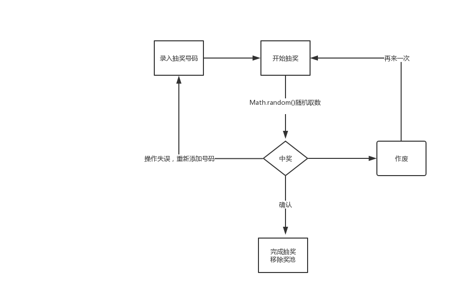

年底降至，各类年会都需用到抽奖，最近刚好写了一个抽奖程序，总结一下，也为了方便日后温故，也可给诸位一个开箱即用的抽奖demo参考
先睹为快，传送门

关键节点有相应注释，请仔细阅读，欢迎指正不足
//生成从minNum到maxNum的随机数
randomNum(minNum, maxNum){
return parseInt(Math.random()* (maxNum - minNum + 1) + minNum);
},
//奖头像动起来
doMove(start, end) {
console.log('start, end', start, end );
this.setIntervalFun = setInterval(() => {
for(let i = start; i < end; i ++ ) {
this.$set(this.currentPrizeUsers, i, this.keepNoRepeat(this.currentPrizeUsers, this.moveUsers));
}
}, 80)
},
//保证数字不重复
keepNoRepeat(currentPrizeUsers, userNoPrize) {
let user = userNoPrize[this.randomNum(0, userNoPrize.length)];
//由于分多小次抽奖，抽奖完成后奖池人数才变化，所以可能存在取值越界
if(!user) {
return this.keepNoRepeat(currentPrizeUsers, userNoPrize);
}
if(currentPrizeUsers.filter(item => item.userid == user.userid).length > 0) {
return this.keepNoRepeat(currentPrizeUsers, userNoPrize);
}else {
return user;
}
},
//停/继续/完成点击
handlePrizeClick: throttle(function() {
//单次抽奖的最后一小次暂停
if(this.movePrizeNum == this.currentPrizeInfo.count) {
this.choujiangId.pause();
this.zhongjiangId.play();
clearInterval(this.setIntervalFun);
this.movePrizeStatus = 2;
this.movePrizeNum += 1;
this.doPrize(this.currentPrizeUsers.filter(item => item.userid).map(item => item.userid).join(','));
return;
}
if(this.movePrizeStatus == 2) {//显示状态-完成抽奖
this.choujiangId.pause();
this.zhongjiangId.pause();
this.dialogTableVisible = false;
this.movePrizeStatus = 0;
}else if(this.movePrizeStatus == 3) {//再次启动
this.choujiangId.play();
this.zhongjiangId.pause();
this.movePrizeStatus = 1;
this.doMove(this.movePrizeNum * this.currentPrizeInfo.everytime, this.currentPrizeInfo.everytime * (this.movePrizeNum + 1) );
this.movePrizeNum += 1;
}else if(this.movePrizeStatus == 1) {//暂停
this.choujiangId.pause();
this.zhongjiangId.play();
clearInterval(this.setIntervalFun);
this.movePrizeStatus = 3;
this.doPrize(this.currentPrizeUsers.filter(item => item.userid).map(item => item.userid).join(','));
}
}, 1000),
//洗牌
randomUser() {
let randomUser = setInterval(() => {
this.moveUsers = this.moveUsers.sort((a, b) => Math.random() > .5 ? -1 : 1);
}, 100)
setTimeout(() => {
clearInterval(randomUser);
}, 2000);
}